我们在几何分类中遇到的形状是十分简单的。它们有干净、锋利的边缘。线段是完美的直线，圆是精致的环形。从太空中看，地球似乎是我们见过的最光滑的大理石，但近距离看，则是另一番风景。崎岖的山峰耸立在涟漪状的沙丘和波浪起伏的海洋上。河流蜿蜒曲折，枝繁叶茂的树木林立在两旁。如果我们要求艺术家表现一个只有线段和圆弧的自然场景，最符合我们期待的是一幅充满灵感的抽象作品。
自然界中的形状往往有着粗糙或不规则的边缘。云或烈火的“形状”是什么？《几何原本》（Elements）对此无法解答。我们需要一个不同类型的形状概念，用于描述我们所处的这个琐碎而不规则的世界。
我们从一个食谱开始。
我们需要一块面团和几把非常锋利的刀子。我们也将雇用一大堆厨师。
这块面团是一个完美的等边三角形。
主厨小心翼翼地切下（并丢弃）由三边中点连线形成的等边三角形。该过程如图所示。
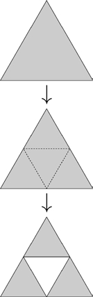
剩下的是三个等边三角形——尺寸是原始三角形的一半——角对角的排列。
现在，主厨召集三位副主厨，并命令他们像她一样做：切掉三个小三角形的中间部分。由此产生的面团由九个四分之一大小的三角形组成。
当然，副主厨们希望有一天能成为主厨，所以每个副主厨召集了三位厨师在四分之一的三角形上重复这个过程。
这个过程还在继续。每位厨师都将自己的那部分三角形交给三位级别更低的厨师，并要求他们仔细切除三角形的中间部分。步骤如下图所示：
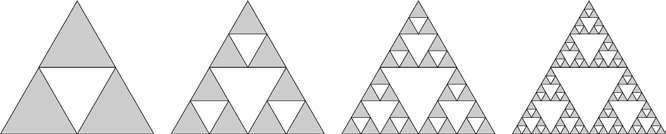
随着授权和切除的过程的重复，无数下属愉快地不断切割着。最后——无论过程如何！——我们创造出了谢尔宾斯基三角形（Sierpinski's triangle），如下图所示：
准确地说，移除过程删除的是三角形的内部；边线不会被移除，最后都会留下。
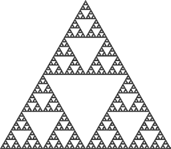
谢尔宾斯基三角形有两个显著的特性，使其被命名为分形（fractal）：它具有自相似性（self–similar）且具有分数维（fractional dimension）。
自相似性的概念比较容易理解。当你观察谢尔宾斯基三角形时，你看到的是三个原尺寸一半大小的三角形。这些三角形中的每一个都由三个较小的（四分之一大小）三角形组成。事实上，如果使用强大的显微镜并放大任意一处微小的区域，你会发现一个和完整图形一模一样的微缩复制品。每个局部和整体都是完全一样的，只不过尺寸更小。
欧几里得几何的对象可以根据其维度（dimension）整齐地分类。
线段、圆弧、正方形边界等都是一维的。它们有长度，但没有面积。螺旋形线圈是一维的，即使它延伸到了三维空间。
当我们考虑这些形状的内部时，矩形、五边形、圆形等是二维的：它们有面积但没有体积。圆柱体的表面是二维的，即使它并不是平放在一个平面里。
而球体、立方体等（当我们考虑它们的内部）是三维的，它们有体积。但是谢尔宾斯基三角形呢？它起始于一个等边三角形，所以它或许是二维的。在这种情况下，它的面积是多少？
为简单起见，假设最初面团的面积为1个单位面积（例如1平方厘米）。虚线将最初的三角形分成四个相同的部分。被丢弃的面团面积为
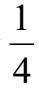
，剩下的面积为原始面积的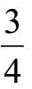
。接下来，三位副主厨开始切面团，切除每个
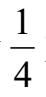
大小的中间部分。他们的工作移除了剩余面积的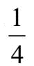
；如前所述，这意味着留下的面积是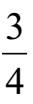
。更低级别的厨师们将每个人得到的剩余部分的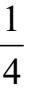
再次移除，再将面积减少到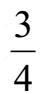
。换句话说，在n轮切割之后，原始面团的剩余量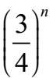
。这个过程重复16次后，99%的面积已被切除。当n趋于无穷时，我们发现所有的区域都被消除了，剩下的都是边线，它们不覆盖任何区域。
谢尔宾斯基三角形是一维的吗？
我们试着计算它的长度。
创建谢尔宾斯基三角形的等效方法是从一个空的等边三角形开始。然后，我们增加三条连接三边中点的线段。然后，我们在三个新形成的三角形上重复这个操作，但不在中间那个原始三角形上操作。我们像这样不断重复：
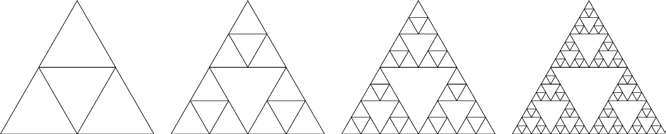
注意：如果等边三角形的边长等于1，则其面积不等于1。我们从一个大小不同的三角形开始，以使计算更清晰。
为了方便起见，我们假设原来的三角形的边都是1个单位长。原始三角形中线段的总长度为3。
插入第一个内部三角形时，三个新的线段每条长度为
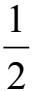
，因此第一次插入使线段总长度增加了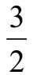
。在第二步中，我们添加了9条线段（三个三角形中的每一个都有三条边）。每条线段长度都是
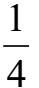
，增加的长度是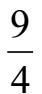
。第三步添加了27条线段（九个三角形中的每一个都有三条边）。这些线段每条长度是
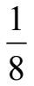
，所以这一步增加的长度是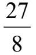
。下一步增加
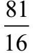
，依此类推。步骤n增加的长度是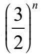
。注意，随着n的增长，这个数量会越来越大。结论：谢尔宾斯基三角形中所有线段的总长度趋于无穷！
谢尔宾斯基三角形的面积为零，长度趋近无限。从这个意义上说，这是一个比一维更“大”而比二维“更小”的对象。但这个描述是不准确的，我们可以更精确。我们将证明其维度等于1.5849625007…，真的。
几何图形的维度是其“厚度”的度量。一维对象（如线段）比填充的三角形“薄”，而三角形又比实心球“薄”。让我们看看如何将这个“薄”或“厚”的模糊概念变成数学上精确的数量。
这个思路是在方格纸上绘制图形。或者，更确切地说，我们反复在方格纸上绘制图形，但在随后的每次绘图中，我们使用的网格会越来越小。
让我们用一个简单的曲线来说明这个思路。也就是说，我们在每个格子为1×1大小的方格纸上绘制相同的曲线，然后在每个格子为
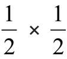
大小的方格纸上绘制相同的曲线，然后在格子为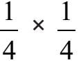
大小的方格纸上绘制相同的曲线，依此类推。结果如下所示[z1]：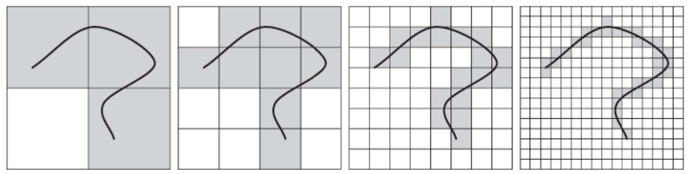
我们已经画出了曲线所接触的方格，我们要数这些格子的数量。结果如下：
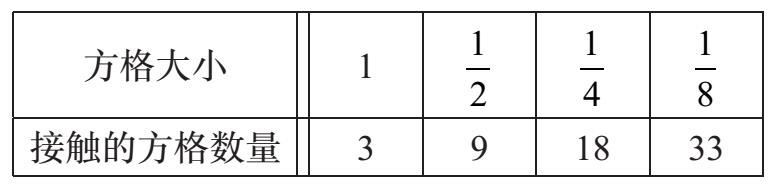
注意，当我们将方格线之间的间距减半时，我们使曲线所接触的方格的数量大致增加了一倍。原因如下：每个方格都覆盖曲线长度的一部分，当我们把方格的尺寸减半时，我们将需要约两倍数量的方格覆盖同样的曲线。我们可以用下面这样的方程式来表示：
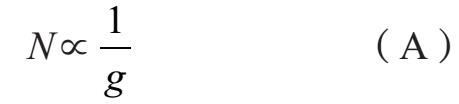
其中g是方格大小，N是曲线所接触的方格的数量。符号∝表示“成正比例”并隐藏了这种关系的一些不精确性。如果曲线是简单的水平线段，那么我们可以有一个精确的方程。但是因为曲线有点扭曲，这种关系非常好，但并不完美。
让我们用一个二维图形重复方格计数的过程，这个二维图是一个半径为1的圆盘。
对数学家来说，圆是一维曲线，圆盘是一个二维图，由一个圆和该圆的内部区域组成。
我们反复在方格大小为1×1，
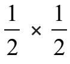
，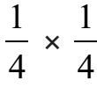
等的方格纸上绘制圆盘。我们每次将圆盘接触的方格涂上阴影，包括接触圆盘圆形边界的方格以及圆盘内部的所有方格。在方格大小为1×1的方格纸上，如果我们把圆盘的中心放在一个方格点上，很容易看出它正好接触到四个方格。更小方格的情况如下，以
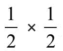
开始。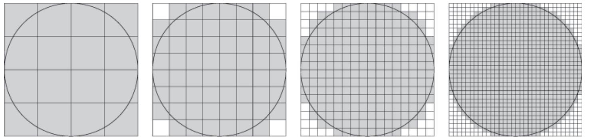
很容易看出，对于
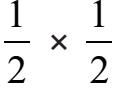
的方格纸，圆盘接触了16个方格。对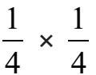
的方格纸来说，圆盘接触了64个格子中的60个。对于更小的方格，计数会变得单调乏味，但我们可以使用计算机编程来为我们计数。结果如下：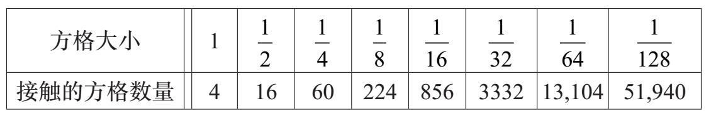
快速浏览这些数字显示，将方格大小减半，圆盘接触的方格数量将增加两倍以上。
比率如下：
16÷4=4， 3332÷856=3.89，
60÷16=3.75, 13104÷3332=3.93，
224÷60=3.73, 51904÷13104=3.96.
856÷224=3.82，
粗略地说，当我们将网格大小缩小到12时，所接触的方格的数量增加到4倍。此外，随着方格尺寸变小，这个“粗略地说”变得更加精确。让我们看看为什么。
当方格间距很小时，圆盘接触的绝大部分方格完全位于圆盘内部。圆周处有很多，但是与内部庞大的数字相比，它们的数量相形见绌。当我们将方格的尺寸减半时，每个内部方格被细分为四个较小的方格，因此这部分的计数增加了四倍。对于圆周上的方格，它们也被更细的方格切割成四个，但是并不是所有新形成的小方格都为圆盘所接触，所以它们的数量并未增至4倍。
依据类似的逻辑，如果我们计算格子中圆盘所接触的方格数量，然后使方格间距减小10倍，则更小方格的数量将比原始方格的数量大约多100倍。第一个方格上的每个内部方格变为100个小方格。圆周上方格的变化并不明显，但是由于它们的数量比内部方格少得多，所以相比之下，这种效果相形见绌。
我们可以这样表示方格数量和方格大小之间的关系：
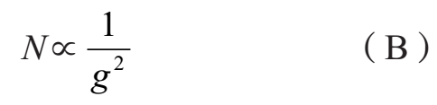
这是另一种检验方程式（B）正确的方法。圆盘面积为A=πr2。在这个例子中，我们假设的是一个半径为1的圆盘，因此面积就是π。
我们在大小为g×g的方格纸上绘制圆盘，并计算其所接触到的方格数量；假设答案是N。这N个方格中每一个的面积都为g2。这N个方格的总面积与圆的面积大致相同。所以得出关系式
面积=π≈Ng2
求N的解，得
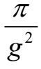
。我们可以简化成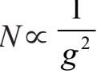
，即（B）。我们找到了一种可以区分一维和二维对象的量化方法。
关系（A）不仅适用于[z1]的曲线，而且适用于任何一个一维对象。对一个一维对象而言，方格缩小为原来的
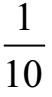
，物体接触到的方格数量约增加到10倍。关系（B）不仅适用于圆盘，而且适用于任1 何二维图形。方格缩小为原来的
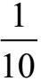
将会使图形接触的方格数量增加到约100倍，因为每个内部方格变为了100个更小的方格。注意，我们在公式（A）给g附加了指数1。这不会改变公式，但确实埋下了一些伏笔！
因此，我们得出：
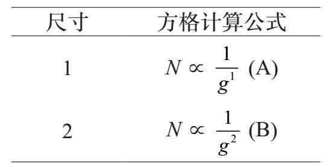
我们现在有一个工具可以区分一维和二维的物体。我们把物体，依次用越来越小的方格覆盖它，然后计算这些格子的数量。我们发现
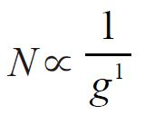
，它可以表示一维对象，也发现了表示二维图形的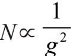
。在本章开始，我们以等边三角形开始构建了谢尔宾斯基三角形。它无法在1×1的方格中匀称地摆放：两个侧面很合适，但在垂直方向上有一点短。我们在这里考虑的变体是以完全相同的方式构建的，但它是以底和高的长度为1的等腰三角形开始。
让我们看看当我们把这个工具应用到谢尔宾斯基三角形时会发生什么。我们把谢尔宾斯基三角放在大小为1×1的方格内。下图显示的是嵌入在大小为
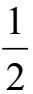
、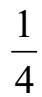
、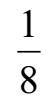
和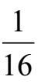
方格中的同一个图：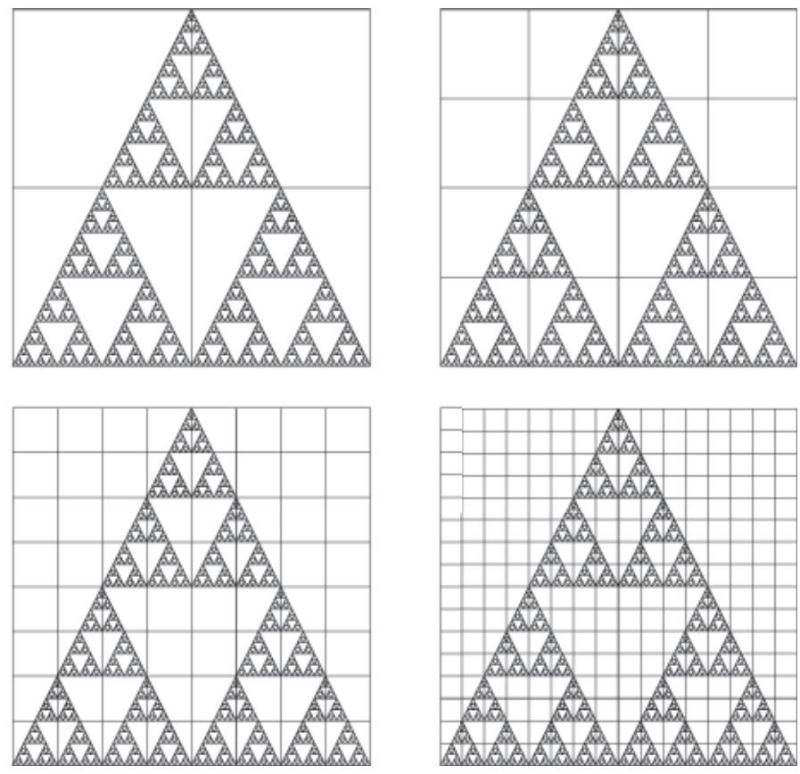
很容易看出在每个方格大小为
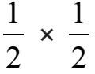
的格子中，四个格子都被接触。在每个方格大小为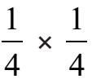
的格子中，左上方和右上方各有两个未被接触的方格，但其余的方格都被图形所接触。因此，对于g =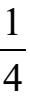
，N=12。下面是这些数字和一些更小格子各种数据的图表：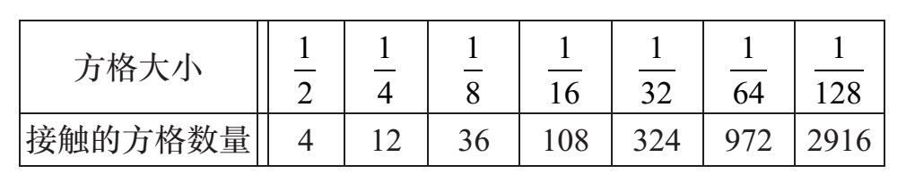
问题是：当我们将方格缩小为原来的
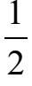
时，接触的方格数量是变为双倍（如同一维对象）还是4倍（如同二维对象）？正确的答案是：都不是！图表中的每个方格数量是前一个的3倍。谢尔宾斯基三角形的方格数比一维对象增加得快，但比二维对象慢。它的维度位于这两个整数值之间。
方格数量增加3倍的原因来自谢尔宾斯基三角形的自相似性。
我们可以得出一个谢尔宾斯基三角形维数的精确值，但要做到这一点需要一些基本的对数和适量的代数知识。如果这令你反感，可以跳过下面几段。
比较上一页四张图中的两张图片（方格大小为和）。在左边的图中，谢尔宾斯基的三角形正好接触到了12个盒子；这很容易算。现在看四张图中的第一幅图，但不要计算接触的方格。相反，将此图视为后面的三个小版本：左下，右下，上中。这三个部分中的每一个有12个接触的方格，总共有36个。现在观察该行中最右的图。它包含三个前一个图的微缩副本，共有3×36=108个接触的方格。
我们的目标是找到类似于方程（A）和（B）的公式——类似这样的：。指数d是维数。
当方格大小为（其中k是正整数）时，我们发现N=×3k。下面是检验过程：
注意，从公式N=×3k得出了与前面表格中所示完全相同的值。
我们的问题是找到一个数字d，使得N∝。事实证明，两边取对数是有帮助的：
符号〜表示一种约等的形式，其准确性随着所涉及的数越来越大而变得更高。
当g=2–k时，得N=×3k。将这些代入d的公式得[d]
结果约为1.5849625。
谢尔宾斯基不仅有一个三角形，他还有一个地毯。以下是编织谢尔宾斯基地毯的步骤：
“无穷”循环往复便会产生这样一个图像：
这个分形的维数是多少？答案见[1]。
学生在代数课中努力学习乘法多项式，尤其是x+y的幂。让我们回想一下这些幂是什么样子的：
(x+y)0→ 1
(x+y)1→ x+y
(x+y)2→ x2+2xy+y2
(x+y)3→ x3+3x2y+3xy2+y3
(x + y)4 → x4+4x3y+6x2y2+4xy3+y4
(x + y)5 → x5+5x4y+10x3y2+10x2y3+5xy4+y5
我们可以将这些多项式的系数显示在一个我们称之为帕斯卡三角形的表格中，如下所示：
我们已经把这些数字括在了正方形中，因为我们接下来的步骤是将一些方格涂成黑色，再将一些涂成白色。具体来说，我们要把那些包含奇数的正方形涂成黑色，把包含偶数的正方形涂成白色。结果如下所示：
最后，连续涂很多行。下面是我们涂到第64行时的结果。
这简直妙极了！
我们以海里格·冯·科赫（Helge von Koch）创作的一个美丽的形状结束分形这一章的讨论。绘制科赫雪花关键在于一个简单的步骤。给定一条线段，我们绘制一个等边三角形，其底边是位于原始线段中间三分之一的部分。然后删除原始线段的中间部分，留下等边三角形的另外两条边。我们现在有一条由四条线段组成的路径，每条路径的长度是原来的三分之一。然后重复整个过程。参看下图。
为了获得完整的雪花效果，我们从等边三角形（而不是单个线段）开始。我们在三角形的每一边操作基本的科赫步骤，不断形成向外的凸起。然后重复，重复，循环往复。
以下是这个过程的结果：
我们不断重复这个过程以至“无穷”，结果便是科赫雪花。
[1]谢尔宾斯基地毯的维数。在这种情况下，使用网格尺寸为1，，，等的方格纸效果会很好。我们得到一个如下的图表：
每次g缩小，方格数量N变为8倍大小。我们可以用一个公式来捕捉这个数字：
使用表达式（参见[d]）得
因此，谢尔宾斯基地毯的维数是log38=1.89278926。